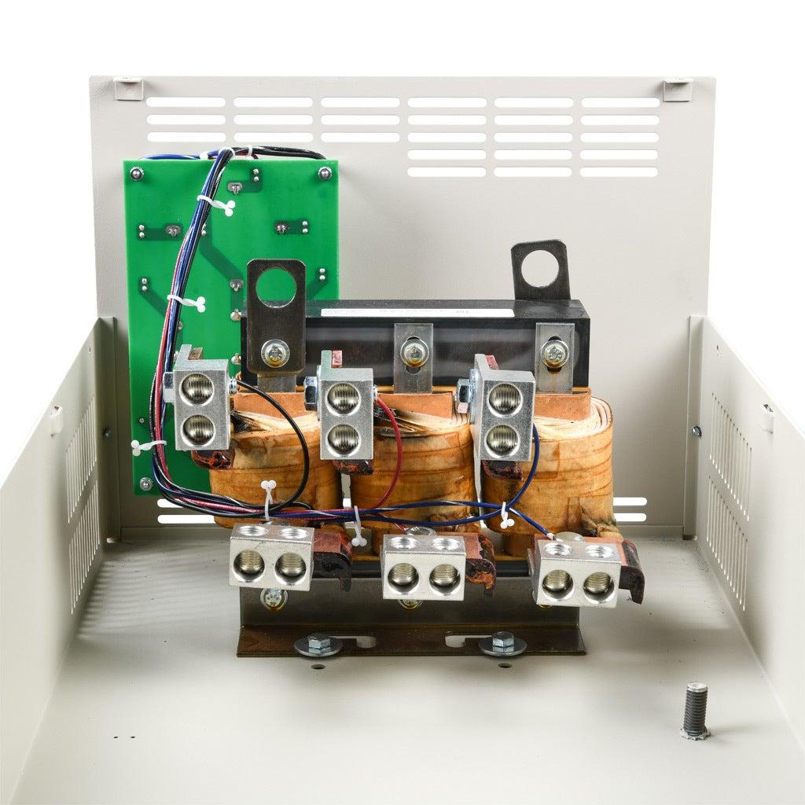
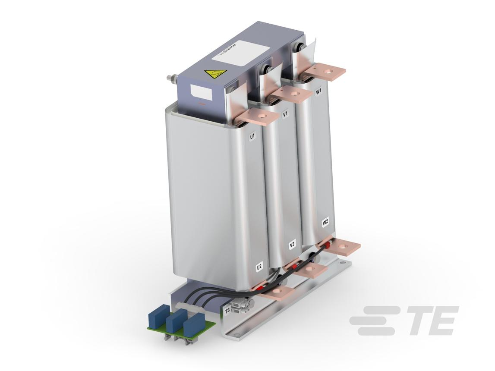
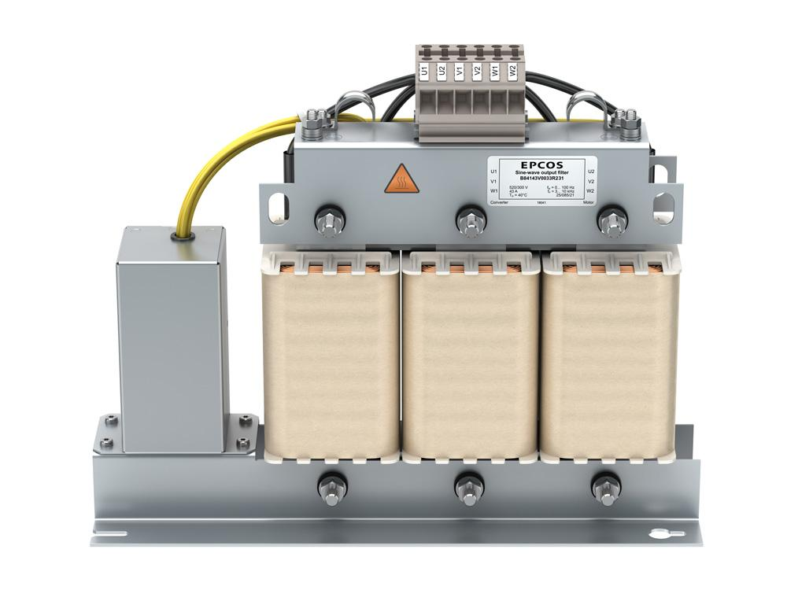

Study path: 02_PLAN_WISE_2026\02_INDUSTRY3_0\02_Auto_Tech\04_VFD\02_Wiring\04_Cable_Length
1. What is VFD-to-motor cable length?
VFD-to-motor cable length is the electrical cable distance between the VFD's output terminals and the motor terminals.
In industrial automation, a VFD may be installed inside a control cabinet while the motor is located on a conveyor, transfer system, robot peripheral, pump, fan, or remote machine.
The cable carries the VFD's PWM output to the motor. As cable length increases, the cable's electrical characteristics become increasingly important.
A longer cable can cause:
- Voltage reflections and increased peak voltage at the motor terminals.
- Higher capacitive charging current.
- Increased common-mode current and leakage current.
- Greater electromagnetic interference potential.
- Additional output voltage drop.
- Possible VFD overcurrent, earth-fault, or other nuisance trips.
- Increased stress on motor insulation and, in some installations, motor bearings.
Important: There is no single maximum VFD cable length that applies to every drive. The permitted length depends on the VFD model, switching characteristics, motor insulation, cable construction, installation conditions, and the manufacturer's specified limits.
2. Basic VFD-to-motor architecture
AC SUPPLY
|
v
+-----------+
| VFD |
| PWM Output|
+-----------+
|
| U, V, W
| Motor cable
| Length = L
v
+-----------+
| MOTOR |
| U, V, W |
+-----------+
|
v
Mechanical Load
For a short cable, the motor-terminal waveform may remain within the drive and motor manufacturer's expected limits.
With a sufficiently long cable, the motor no longer behaves as though it is connected directly to the inverter. The cable's distributed inductance and capacitance affect how switching edges travel and reflect.
This is why cable length is an electrical design parameter, not merely a mechanical routing detail.
3. Why long cables create problems
3.1 Voltage reflections
A motor cable behaves like a transmission line when the voltage transition is sufficiently fast relative to the cable's propagation time.
When a fast switching edge travels down the cable and reaches the motor, the motor-end impedance may not match the cable's characteristic impedance. Part of the travelling wave is reflected.
The original and reflected waves can combine, producing a peak voltage higher than the voltage expected from the inverter's basic output waveform.
VFD Switching Edge
|
v
Travels through cable
|
v
Reaches motor terminals
|
+---- Part of wave absorbed
|
+---- Part reflected
|
v
Wave combines with later edges
|
v
Possible motor-terminal
voltage overshoot
The exact peak depends on the drive's switching edge, cable characteristics, motor impedance, cable length, and waveform timing.
The peak is not necessarily exactly twice the nominal voltage, even though simplified transmission-line examples sometimes use that figure.
3.2 Motor insulation stress
Motor windings contain insulation between turns, between winding sections, and between the windings and the motor frame.
Fast voltage transitions and repetitive voltage peaks can increase insulation stress, particularly in motors not designed for inverter operation.
Potential consequences include:
- Accelerated insulation ageing.
- Turn-to-turn insulation damage.
- Winding failures.
- Increased risk of failure in older or unsuitable motors.
This does not mean every long cable will damage every motor. The risk must be assessed against the actual motor insulation system and VFD output characteristics.
3.3 Cable capacitance and charging current
The conductors in a motor cable have capacitance relative to one another and to the shield, protective earth, or surrounding metalwork.
As cable length increases, total cable capacitance generally increases.
For a simplified capacitive load:
Where:
- \(i\) = capacitive current.
- \(C\) = capacitance.
- \(dv/dt\) = rate of voltage change.
For a given voltage rise rate, increasing capacitance increases the current required to charge that capacitance.
Long cables can therefore increase high-frequency output current and common-mode current. Depending on the drive and cable, this can contribute to current trips, leakage-current issues, and EMC problems.
3.4 Common-mode current and EMC
The VFD's switching voltages can drive high-frequency currents through the capacitance between motor conductors, the cable screen, and earth-connected metalwork.
Longer cables often have greater total capacitance, which can increase these currents.
Possible symptoms include:
- PLC input disturbances.
- Encoder or resolver faults.
- Industrial Ethernet communication errors.
- Unwanted sensor triggering.
- Increased leakage current.
- Bearing-current issues in susceptible motor installations.
Correct cable shielding, bonding, and routing remain important even when an output filter is fitted.
3.5 Voltage drop
A long cable has greater conductor resistance and inductance than a short cable of the same construction.
Under load, this can produce additional voltage drop and affect the voltage available at the motor.
Voltage drop is particularly relevant when selecting conductor size, evaluating motor performance, and assessing the complete installation. It is a separate consideration from fast-edge voltage reflections.
A dv/dt filter does not automatically correct every voltage-drop problem. Cable sizing and filter selection must be assessed separately.
4. What determines the maximum permitted cable length?
The allowable motor-cable length is determined by several interacting factors.
| Factor | Effect |
|---|---|
| VFD model | Defines tested or specified cable limits and compatible filters |
| Switching rise time | Faster edges can increase reflection-related voltage stress |
| Switching frequency | Influences switching losses and aspects of the output current and interference |
| Motor insulation | Determines the motor's ability to tolerate the applied voltage waveform |
| Cable construction | Affects capacitance, characteristic impedance, shielding, and losses |
| Cable length | Influences propagation delay, capacitance, and voltage-drop characteristics |
| Number of motors | Multiple connected motors alter the load and cable network |
| Output filter | Can reduce specific output waveform problems within its rated application |
| Operating conditions | Load, speed, temperature, and other conditions affect the installation |
4.1 Manufacturer limits
A drive manual may specify separate maximum cable lengths for:
- Unscreened and screened cables.
- Operation with or without an output filter.
- Different motor or voltage configurations.
- EMC-compliant installations.
- Parallel motors or other special applications.
The limits can differ substantially between drive families.
Never use a cable-length limit from one VFD model as a universal value for another.
For a real installation, record the drive model and rating, motor data, cable type and actual route length, and then use the manufacturer's documentation to determine the permitted configuration.
5. Output reactors and filters
The correct solution depends on the problem. An output reactor, dv/dt filter, and sine-wave filter do different jobs.
Option 1: Output reactor

Adds series inductance to the VFD output. It can reduce some current ripple and output transients, but it is not guaranteed to control long-cable voltage peaks adequately.
Option 2: dv/dt filter

Specifically designed to reduce the output voltage rise rate and usually reduce peak-voltage stress at the motor terminals.
Option 3: Sine-wave filter

Smooths the PWM waveform toward a sinusoidal voltage waveform. It may be required for particular long-cable or motor applications, depending on the drive manufacturer's guidance.
5.1 Output reactor
An output reactor is an inductor installed between the VFD and motor.
VFD OUTPUT
|
v
+----------------+
| Output Reactor |
+----------------+
|
v
Motor Cable
|
v
Motor
Its inductance opposes rapid changes in current and can reduce certain output-current disturbances.
Possible applications include:
- Reducing some output-current transients.
- Helping with particular motor-cable configurations.
- Supporting drive operation in applications approved by the manufacturer.
Limitations:
- It may not sufficiently reduce motor-terminal voltage peaks caused by cable reflections.
- It does not provide the same waveform conditioning as every dv/dt or sine-wave filter.
- It introduces impedance and voltage drop that must be considered.
Use it only where its ratings and performance match the actual requirement.
5.2 dv/dt filter
A dv/dt filter is designed to reduce the rate at which the VFD output voltage changes.
VFD PWM OUTPUT
|
v
+----------------+
| dv/dt |
| Filter |
+----------------+
|
v
Long Motor Cable
|
v
MOTOR
By reducing the steepness of voltage transitions, the filter can reduce reflection-related peak voltage and motor insulation stress.
It is useful when the motor-cable arrangement exceeds the drive's permitted unfiltered cable length or when the drive and motor manufacturers specify additional output conditioning.
However, the filter has a rated operating range and cable-length capability. It should not be assumed to work with every switching frequency, motor, or cable arrangement.
5.3 Sine-wave filter
A sine-wave filter provides more extensive smoothing of the PWM waveform.
It can be suitable for applications that require a near-sinusoidal motor voltage, including certain long-cable installations or motors with particular requirements.
Considerations include:
- Filter current and voltage ratings.
- Permitted output frequency and operating range.
- Voltage drop and thermal dissipation.
- Compatibility with the VFD's control method.
- Cable length and motor characteristics.
- Manufacturer requirements for tuning or configuration.
A sine-wave filter is not simply a more powerful output reactor. It is a different type of output filter with different performance and limitations.
6. How to choose the appropriate solution
Use the following decision process.
START
|
v
Determine actual motor-cable length
|
v
Check the exact VFD manual
|
v
Is the cable within the permitted
unfiltered length for this application?
|
+---- YES ----> Check EMC, voltage drop,
| cable sizing, and motor data
| |
| v
| Commission and verify
|
+---- NO -----> Check manufacturer's
approved output-filter options
|
v
Is reducing voltage rise rate
and peak-voltage stress sufficient?
|
+------+------+
| |
YES NO / OTHER REQUIREMENT
| |
v v
dv/dt filter Assess sine-wave filter
if approved or other approved solution
| |
+------+------+
|
v
Verify cable length limits,
motor compatibility, ratings,
installation, and EMC
The decision is based on documented requirements, not on cable length alone.
A long cable might be acceptable without a filter for one drive but require an output filter for another.
7. Practical automotive automation examples
Example 1: Remote conveyor motor
A VFD is installed in a central panel, while a conveyor motor is located at the far end of a production line.
The motor cable is extended during a line modification.
Possible risks:
- The total length exceeds the VFD's permitted unfiltered length.
- Motor-terminal voltage peaks increase.
- Cable capacitance and common-mode currents increase.
- EMC performance changes after the modification.
Correct approach:
- Measure the complete cable route from the VFD output to the motor, including intermediate cable sections.
- Identify the exact VFD and motor models.
- Check the permitted cable length in the drive documentation.
- Confirm cable construction and shield termination.
- Select any required reactor or filter from the manufacturer's approved options.
- Retest motor operation, drive faults, and nearby control signals.
Do not assume the cable is acceptable simply because the motor starts and runs.
Example 2: Encoder faults after a cable extension
An encoder-equipped motor operates normally before the VFD-to-motor cable is extended. Afterwards, encoder faults occur during acceleration.
Possible causes include:
- Increased common-mode interference.
- Poor separation between motor and encoder cables.
- Incorrect shield termination.
- An unsuitable encoder cable or connector.
- A genuine encoder, drive, or configuration problem unrelated to cable reflections.
Correct approach:
- Compare the original and modified wiring routes.
- Inspect the motor-cable and encoder-cable shields.
- Check the encoder signal at the appropriate diagnostic points.
- Confirm the VFD cable-length requirements.
- Apply output filtering only if the evidence and manufacturer guidance support it.
An encoder fault is not proof that a dv/dt filter is required. It is evidence that something needs diagnosis.
Example 3: Drive trips after a long cable is installed
A conveyor VFD reports an overcurrent or earth-fault trip after the motor is relocated.
Investigate:
- The exact fault code and when it occurs.
- Cable insulation and wiring integrity.
- Motor winding condition and motor connection.
- Cable length, type, and capacitance.
- Drive parameters and motor data.
- Whether the drive supports the resulting cable configuration.
- Whether the specified output reactor or filter is required.
Never diagnose a trip solely from the word "long." Cable length is one possible contributor among several.
8. Cable length and commissioning measurements
8.1 Measure the correct length
Use the complete electrical route between the VFD and motor, not merely the straight-line distance between their physical locations.
Include all installed sections, junctions, and relevant extensions.
For installations with multiple motors or branches, record the topology and individual cable lengths because the resulting electrical behaviour may differ from a single-motor arrangement.
8.2 What to inspect
| Inspection | Purpose |
|---|---|
| Cable length | Compare against manufacturer limits |
| Cable cross-section | Check current-carrying capacity and voltage drop |
| Cable type | Confirm suitability for VFD output |
| Shield and PE | Verify EMC and electrical safety |
| Motor insulation | Confirm compatibility with the drive waveform |
| Filter ratings | Confirm suitability for drive, motor, and cable |
| Drive fault history | Identify operating conditions and fault patterns |
| Control signal behaviour | Detect possible EMC issues after modifications |
8.3 Measuring PWM output voltage
VFD output waveforms contain fast switching edges and may have high common-mode voltages.
Ordinary multimeters can produce misleading readings, and an unsuitable oscilloscope probe can expose personnel or instruments to dangerous voltages.
When waveform measurement is necessary, use appropriately rated differential probes, suitable instruments, and qualified procedures. Follow the drive manufacturer's safety instructions. Do not connect a grounded oscilloscope probe directly to a VFD output terminal unless the measurement system is specifically designed and approved for that application.
9. Common mistakes
- Assuming all VFDs have the same maximum cable length. Limits are model- and application-dependent.
- Installing an output reactor when a dv/dt filter is required. The components do not necessarily provide equivalent voltage-peak control.
- Ignoring cable capacitance. A longer cable can increase capacitive and common-mode currents.
- Using ordinary motor cable without checking suitability. Cable construction affects insulation, EMC, and electrical performance.
- Ignoring the motor insulation system. The motor must tolerate the applied inverter waveform.
- Assuming a filter fixes every EMC problem. Shielding, bonding, and cable routing still matter.
- Treating an overcurrent trip as proof of excessive cable length. Wiring faults, load conditions, and drive parameters can produce similar symptoms.
- Extending the cable without updating documentation. The as-built length, cable type, filter configuration, and drive settings should be recorded.
10. Interview questions and answers
Q1. Why does long VFD-to-motor cable length matter?
It affects voltage reflections, capacitive charging current, common-mode current, voltage drop, and electromagnetic interference.
Q2. Why can voltage at the motor terminals exceed the expected inverter output voltage?
Fast switching edges can reflect at the motor-cable termination. The original and reflected waves can combine and produce voltage overshoot.
Q3. What is dv/dt?
It is the rate of change of voltage with time. High dv/dt means the voltage changes very quickly.
Q4. Why is cable capacitance important?
Greater capacitance requires more charging current for a given voltage rise rate. Long cables can therefore increase output and common-mode currents.
Q5. What does an output reactor do?
It adds series inductance and can reduce certain output-current transients and disturbances. Its effectiveness for voltage reflections depends on the application and component design.
Q6. What does a dv/dt filter do?
It reduces the output voltage rise rate and can reduce peak-voltage stress at the motor terminals.
Q7. What is the difference between a dv/dt filter and a sine-wave filter?
A dv/dt filter primarily controls voltage rise rate and related peaks. A sine-wave filter smooths the PWM waveform more extensively toward a sinusoidal voltage.
Q8. Does every long motor cable require a filter?
No. The required arrangement depends on the specific VFD, motor, cable, and manufacturer's limits.
Q9. Can a long cable cause an EMC problem even if the motor runs normally?
Yes. The increased capacitance and high-frequency current paths can disturb nearby control and communication circuits without immediately causing a motor fault.
Q10. What information is needed to select an output filter?
At minimum, the VFD model and rating, motor data, cable length and type, operating conditions, and the manufacturer's approved filter requirements.
Q11. Can a dv/dt filter correct excessive cable voltage drop?
Not necessarily. Voltage drop must be evaluated through cable sizing, current, cable impedance, and the filter's own characteristics.
Q12. What should be done after extending a motor cable?
Recheck the permitted cable length, cable type, output-filter requirements, shielding, PE connections, motor compatibility, and control-system behaviour.
11. Practical exercises
Exercise 1: Draw the output circuit
Draw the VFD, output reactor, motor cable, motor, protective-earth conductor, and cable shield. Show which components are optional and which connections are required for safety.
Exercise 2: Diagnose a remote motor installation
A conveyor motor is moved farther from its VFD. After the change, the drive occasionally trips and an encoder reports errors.
Prepare a fault-investigation table with these columns:
| Observation | Possible cause | Test | Corrective action |
|---|---|---|---|
| Drive trips during acceleration | Overcurrent, cable capacitance, wiring fault, or load issue | Read fault history and inspect the output circuit | Correct the verified cause |
| Encoder errors occur with motor switching | EMC coupling or feedback-circuit fault | Inspect routing, shielding, and signal quality | Correct wiring or interface as required |
| Motor-terminal voltage peaks are excessive | Cable reflections and fast switching edges | Use an appropriate rated measurement setup | Apply a manufacturer-approved output filter |
Exercise 3: Compare output components
Explain why each of the following might be selected:
- Output reactor.
- dv/dt filter.
- Sine-wave filter.
Include one limitation for each component.
Exercise 4: Prepare a cable-extension approval checklist
Before approving a modification, document:
- Original and proposed cable length.
- Drive and motor model.
- Cable type and cross-section.
- Cable routing and shield termination.
- Manufacturer's maximum cable-length specification.
- Required output filter, if any.
- Commissioning measurements and test results.
12. Final mental model
The key relationship is:
Longer Motor Cable
|
+--> Greater Cable Capacitance
|
+--> Longer Wave Propagation Time
|
+--> Possible Voltage Reflections
|
+--> Increased Common-Mode Current
|
v
Potential Motor Stress, Drive Trips, or EMC Problems
|
v
Check Cable Limits and Installation Conditions
|
v
Select Approved Reactor / dv/dt Filter /
Sine-Wave Filter if Required
|
v
Commission and Verify
Remember: Cable length is not just a distance measurement. It changes the electrical behaviour of the VFD-to-motor circuit. Correct selection depends on the complete drive, cable, motor, and installation, with the manufacturer's specifications determining the permitted arrangement.
Next topic in sequence
02_PLAN_WISE_2026\02_INDUSTRY3_0\02_Auto_Tech\04_VFD\03_Motor_Params
03_Motor_Params - Motor parameters
The next topic covers motor nameplate data, rated voltage and current, frequency, rated speed, power, power factor, efficiency, motor-control settings, and how incorrect VFD parameters affect commissioning and troubleshooting.